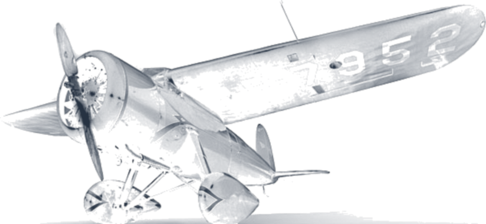
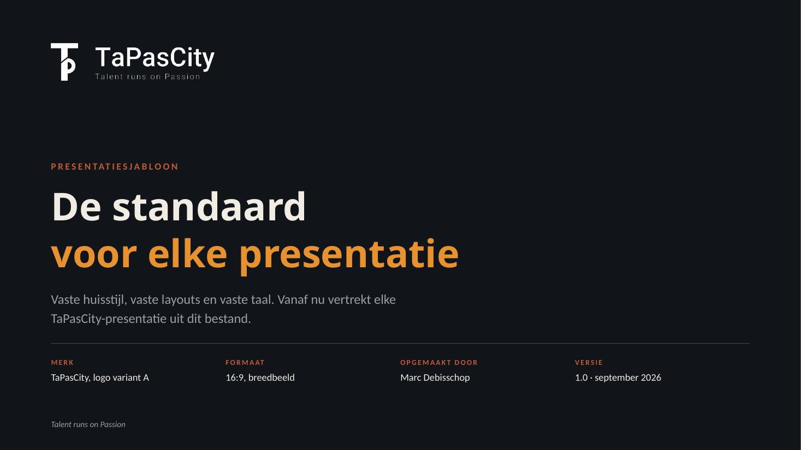
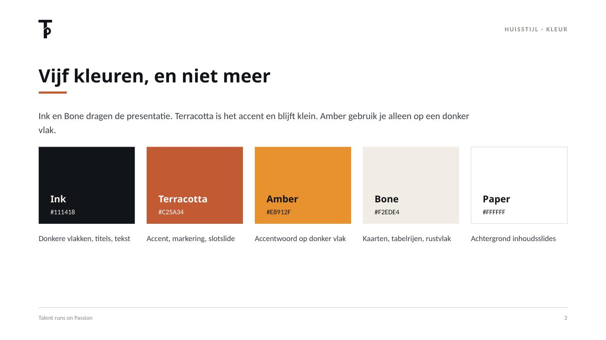
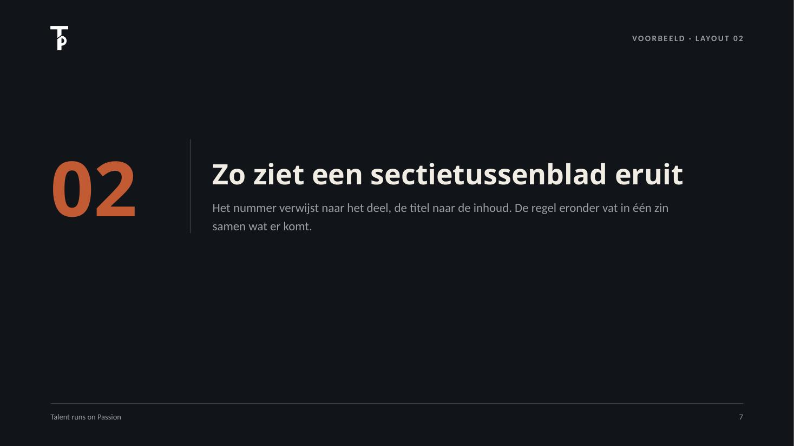
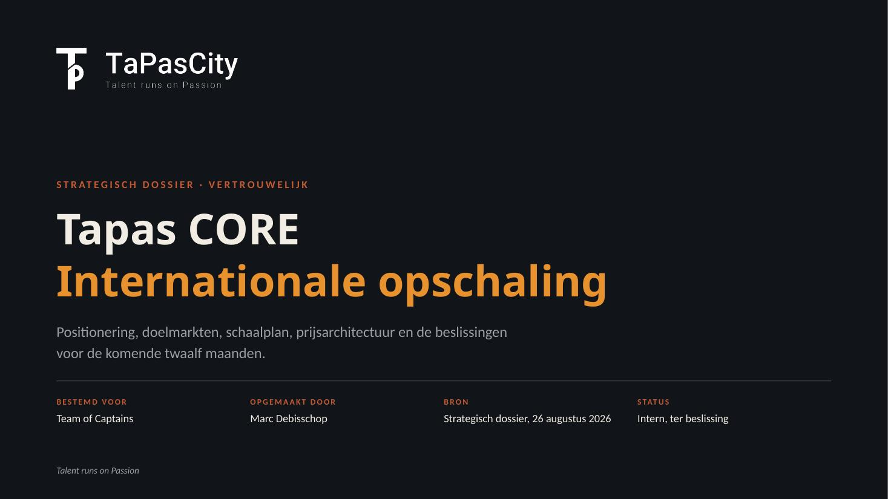
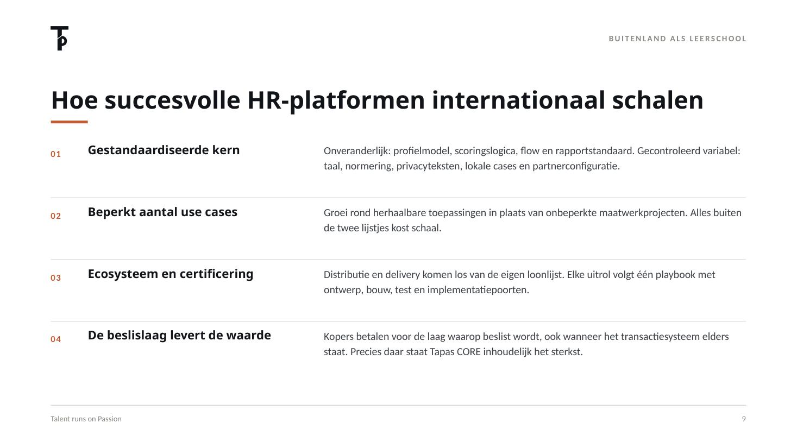
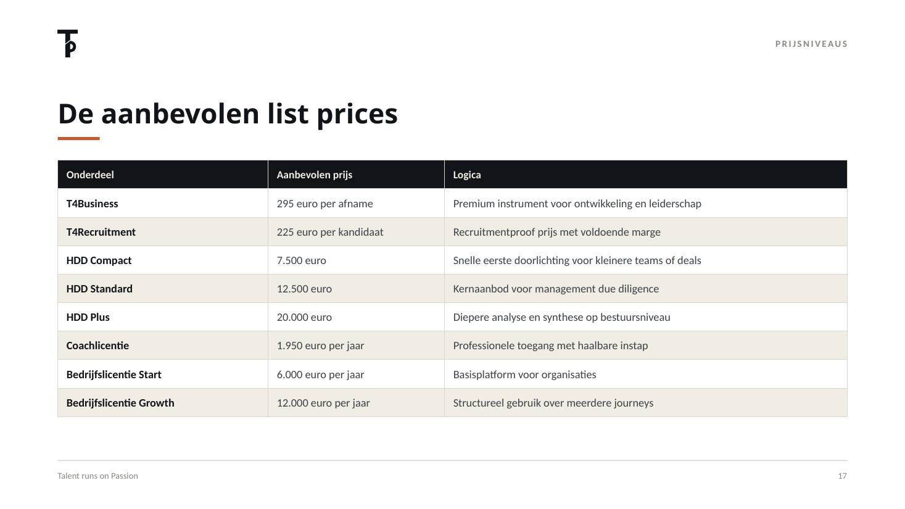

What is running
- Platform · tapas-demo.onrender.com — open this one
- Temperament Wheel · its own app, on an internal link
- Competence simulation · its own app, on an internal link
- Codebase · github.com/MarcDebisschop/tapas-demo

An inventory for Brennan Keller, Perplexity · compiled 7 September 2026
Marc Debisschop — organisational change manager, not a software engineer — used Perplexity Computer to build an assessment platform, seven instruments, three comic albums, six read-aloud books and a complete brand system. This page is the audited record.
“You've been one of my highest usage Perplexity accounts for three months straight… people have genuinely unique use cases that I love learning about.”
Brennan — you sent one email and accidentally commissioned an audit. I could have answered in a paragraph. Instead I asked Computer to open the archive, count what is actually in there, and refuse to write down anything it could not point at. What follows is the result: 1,385 files, 26 threads, 87 days, and a fair number of things I would not have believed possible in June.
Fair warning about the “highest usage” part. It is not that I type quickly. It is that a talent instrument needs a scoring engine, and a scoring engine needs validation, and validation needs a report, and a report needs a house style, and somewhere around there a children's book series appeared. One thing genuinely leads to the next.
One more thing. In our platform there is a Gallery of Jesters — the people we hang on the wall for saying the thing nobody else will say. You sent the email that started all this counting, so you are in it now: painted in the Dutch Golden Age manner, bells on the shoulder, hung in a carved gilt frame — all of it generated in this very account. Click it if you want a closer look at the brushwork.
Beyond that: plenty of pictures below. Click any of them — they open full size. Everything you see was produced in this account, and the paper trail is in the archive.
Marc Debisschop · organisational change manager · Wijnegem, Flanders · Talent runs on Passion
01 — The hard numbers
Every figure below comes from the session archive itself: the asset register, the project notes and the transcripts. Where the register repeats a file, both the row count and the unique count are given.
| Thread | Subject | Assets |
|---|---|---|
| 94da2bb0 | Kompas PDF engine, instrument architecture, trend monitoring, HDD | 332 |
| a5238d9d | Test cycles for five instruments, invitation flow, platform films | 274 |
| b2fb8bf0 | Study world, gateway and Cijferslot, credit and pricing layer | 187 |
| 7417137b | TaPasCity logo and brand applications | 181 |
| 9b6b5ace | Report generator, reference QA, skill versions | 168 |
Every one of the 945 turns in the archive carries a UTC timestamp, so this is measured rather than estimated. Consecutive prompts less than 30 minutes apart are treated as one continuous work block; longer gaps end the block.
The result: 115 hours of hands-on time across 48 active days out of 90 — an average of 2 hours 24 minutes per active day, or 1 hour 17 minutes averaged across every calendar day, including the 42 days with no activity at all. The busiest single day was 26 August, at eight hours.
That is the part worth noticing. Those 115 hours produced 1,369 delivered artefacts — around twelve per hands-on hour. Heavy usage, measured properly, turns out to be a story about leverage rather than volume.
Source: the UTC timestamp on all 945 user turns across all 32 archived sessions, filtered to 10 June – 7 September 2026, which leaves 893 turns. Active time is the sum of the gaps between consecutive prompts where that gap is under 30 minutes, plus a five-minute tail per block. Moving the threshold to 20 or 45 minutes shifts the total between 87 and 155 hours, so the average per active day ranges from 1 h 49 to 3 h 13; the 30-minute model sits in the middle. This counts time between prompts only — it excludes the stretches when Computer was working unattended, and any reading or reviewing after the last prompt of a block. A conservative floor, not a ceiling.
02 — How it started
“An ICT partner introduced through PMV was proposed to build the TaPas platform, but the quoted price of about 240,000 euros was too high — so I moved on to building a working AI demo of the platform myself, from Friday evening 12 June 2026 onward.”
Project note · human due diligence · updated 15 June 2026 · names removed
The first recorded platform briefing is timestamped
12 June 2026, 14:14 UTC, thread
69ce7644, turn 48. It opens with “you are an expert in building
applications from AI. this is my raw question.” — and then asks, in one go, for
multiple questionnaires, invitation links, dashboards, PDF reports, companies and
schools, coaches, credits and team analysis.
Three notes on honesty, kept here rather than hidden: the supplier and the person who introduced them are named in the project note but deliberately not named here; the original quote document itself is not in the archive; and 14:14 UTC is 16:14 local — “Friday evening” comes from the note, not from the timestamp. What is hard is this: on 12 June, nothing existed. Everything below came after.
03 — The 87 days
04 — The platform
Not a chat wrapper. A deterministic report chain, a credit and pricing engine, two separate product worlds, and an entry experience built to calm a candidate down before they answer a single question.
As it stands today, on tapas-demo.onrender.com: sixteen instruments on one engine, three named programmes, four report layers, three scoped portals, English and Dutch, light and dark. The specifications below are the engineering record behind that surface.
Route /#/poort, with separate variants for students and teens. Three
skins — vault lock, combination lock, secret lock. Four dials, then a 4/2/6
breathing sequence with a mantra before the instrument begins. Tested end to end
against the dev server, through to the participant dashboard.
Work and organisation in cyan; study and education in amber-gold on dark. Pricing and language context follow automatically from organisation type — a school gets education, everything else gets work. The study world is described as fully built out across four pages.
server/t4p/rapport.ts builds its own HTML;
server/rapport-pdf.ts renders via Playwright/Chromium;
server/t4p/kompas-layout.ts is a port from Python/WeasyPrint to
TypeScript. kompas-contract.ts fixes 24 chapters as a
contract. Embedded fonts, icon data URIs, preferCSSPageSize, zero
margins. Architectural goal: a structural instrument → generator registry with no
generic short fallback.
server/tendens-monitoring.ts with genereerDraft(), an
admin-only draft route, and a “generate draft interpretation” button. Only signals
marked confirmed or published are included; with none confirmed, an empty draft is
returned. Verified live at commit 374ac91 with
58 of 58 tests green.
BEKWAAMHEID_POORT with values uit / log /
handhaaf, defaulting to log. Gateway operates on a
24-month licence cycle.
Look · 01
Not mock-ups, and not last month's build. These screens were captured from the live application at tapas-demo.onrender.com on 7 September 2026 — the current version, in English, with the programmes, the four report layers, the sixteen instruments and the three separate portals. Click any image to open it full size.
Look · 02
An assessment platform normally looks like a form. The Lounge is the opposite bet: the product is a place. It is the one part of the build that measures nothing at all.
The platform carries two worlds — work and organisation, and study. Both rest on the same idea: see people through their talent. But they run past each other, even though behind them stand the same people: the professional who was once a student, the student who leads tomorrow, the coach who crosses both. The Lounge gives that shared core a home. It deliberately carries neither world's colour, and you do not reach it through /work or /study — it has its own door.
Inside, titles stay outside. An HR director sits next to a second-year psychology student. What connects them is not a CV but a signed member's promise — a short deontological code on respect, confidentiality, sincerity and constructive intent. Access runs through the TIP card, Talent in Passion: not a login, a membership object with its own number.
Every room answers a need the instruments cannot. The reception gives you a moment to arrive. The Talent Café is for meeting someone without an agenda. The quiet room offers guided meditation and breathing exercises in four languages, and a mode with no timer at all, called simply just be — because talent does not only live in constant activity. The workshop holds exercises and team sessions. The terrace is where a session ends.
On arrival the Lounge asks one question, with two buttons of equal weight: do you want to find quiet, or do you want to meet someone? Rest is worth as much here as contact. Moderation and GDPR are not bureaucracy bolted on afterwards — they are the same value stated in code: take care of every person who walks in.
Concept and build plan written in this account, June 2026 — eleven rooms, member promise, TIP-card access, moderation and data model. Interiors below generated here too.
05 — The instrument family
Human Due Diligence and Leadership & Team Energy are the first international wedge. The output stack is fixed: Individual Insight, Facilitator Sheet, Management Summary, Board Sheet.
Recorded in five definition and implementation documents, plus a report on converting interpretation management into text management.
Not a fourth measurement instrument but a composite, phased journey. Phase 1: TaPas
Teamscan plus 2MINSCAN, with a hidden Go/No-Go and consultant override. Phase 2:
T4P Business Kompas per person → talent maps, driver patterns, an aggregated
cognitive team profile. Routes /hdd and /hdd/rapport; two
final reports — Investor Report and Team Report. A demo journey is seeded: a
founder-management team, M&A, completed, five board members.
Solutions: Human Due Diligence, Leadership & Team Energy, Development & Mobility, Recruitment & Role Fit.
A technical and graphical specification of 24 wheel positions in 15-degree steps, compared against the 2022 source mat. A working app, plus a full team cycle for a fictional company: five individual 2MINSCAN PDFs and team profiles in three languages. Retained data per participant is deliberately minimal — name, role, organisation, EG code, wheel position, language, date. No answers, no scores, no photos, no reports.
Look · 03
Every instrument ends in a document a human being has to be able to read alone, without a consultant in the room. These are real pages from generated reports — a business profile, a study compass for a 17-year-old, a French team energy profile, a children's edition, and the factor-analysis report that checks whether any of it holds up.
06 — Testing, evidence, release
This is the part that distinguishes the work most. Every instrument has a walked test path and a delivered evidence PDF — including a path deliberately walked with a blank answer and one with an incomplete assessment.
| Instrument | Evidence delivered |
|---|---|
| T4P Business Kompas | Test report plus an evidence PDF of the profile report. Reported: 35 of 37 checks green, a 12-step path, a 32-page report. |
| T4Students Studiekompas | Eight files — test reports in Word and PDF, four evidence PDFs including one of 42 sheets, and two dispatch checks. |
| T4Recruitment | Test report plus an evidence PDF of the role profile. |
| T4Teens | Test report plus an evidence PDF. |
| T4Kids | Test report plus an evidence PDF. |
overflow:hidden, and
measurement tables that only responded to the literal heading “Meting”. For a June
source profile the session reports 30 pages, 24 chapters, 20 green QA checks.
07 — Stories and education
Three bound comic albums of 58 pages, three fifteen-page school editions, and six read-aloud books for ages six to nine — each with a fully worked lesson file. Produced through a scripted pipeline, not one-off prompting.
One file holds text, casting, speaker positions, prompts and metadata. The chain:
lint_canon.py, lint_prompt.py, gen_panels.py,
qc_panel.py, compose3.py, make_pdf.py, and a
DRYRUN=1 blind proof. Changes go into the source first, then
lettering, then binding. After the final rounds:
zero blocking findings on canon lint, dossier lint and the
editorial gate.
Teacher sheet on p. 2 with five learning objectives; word sheet on p. 5 with the fact / interpretation / label exercise; energy sheet on p. 12 with one task under three conditions; transfer sheet on p. 13. Every chapter assignment has three differentiation paths — start, standard, advanced — and each album closes with three prediction questions pointing to the next.
The Whispering Invitation · The Island of Talents · The Figures on the Second Island · The Island of the Accelerators · Engine Land — Throttle and Brake · Tappie and the map of tomorrow. Six manuscripts, seven story PDFs of 18 to 20 pages, two concept documents, a master brief, two lore versions and a series bible with character pages.
One per book: framing, objectives and attainment targets, ZILL alignment, lesson flow, teaching formats, differentiation, assessment, reflection and rationale. Pupil tracking runs through a talent passport. Plus a scientific rationale in four variants, including a 17-page version specifically for educational use, and a diversity and representation action plan.
A series dossier with publication plan (22 pp.), a note to the Department of Education and Training, a contact letter to Bruno Vanobbergen requesting a substantive reading response, and a classroom working edition of 97 pages. Review: a screening package for an eight-year-old, a parent and a teacher, a 13-page review, four raw reader reports, and a build plan with 20 recommendations across four workstreams.
Look · 04
The same talent model, aimed at nine-year-olds. Three full comic albums of 58 pages each, drawn panel by panel through a scripted production line with seven gates — script, panels, lettering, binding, inspection — so a change to one page never invalidates the album. Plus read-aloud books around Tappie, the guide character.
08 — Brand and house style
Five directions were produced and rejected. Then five new “mark-inside-the-letter” directions. Two finalists: A, the T/p ligature in which the p carries the T; B, the street — two towers with an open street between them, extensible into a skyline. A scored 32, B scored 34 out of 50: too close to call, so the choice was left open on purpose.






Look · 05
One identity has to work on an investor deck, a school worksheet, a street sign and a phone icon. So it was tested on all of them — logo studies, a pictogram set, signage, stationery, an app icon in a hand, and film stills for the launch material. All generated in this account, none of it stock.
The watermark
It is Amelia Earhart's Lockheed Vega. She opens the first comic album, she is the reason the platform has a compass instead of a progress bar, and her aircraft is the watermark sitting faintly behind every screen of the TaPas platform — and behind this page, which is why it is here.
It is also the strictest rule in the codebase. When organisations were allowed to brand their own portal — own logo, own background, own quote — one line was non-negotiable, written exactly like this:
“Ons watermerk (vliegtuigje van Amelia Earhart) mag nooit gebruikt worden in een
andere ‘organisatie’. Dat is een no go.”
— brief, 26 July 2026
It did not become a guideline in a PDF. It was compiled into a pure function in
shared/branding.ts so no component can route around it: at organisation
scope toonEarhart = false, and
.organisatie-branding body::after { display: none !important } switches
the aircraft off even when the organisation set no background of its own — “when in
doubt, do not show it”. Only TaPasCity itself keeps the watermark, and there is an
explicit unit test on exactly that behaviour.
That is the part I did not expect from working this way: a sentence typed in frustration on a Sunday ends up as a tested invariant. A brand rule stopped being a promise and became a failing test if anyone breaks it.
earhart-vega-watermark.png
Shipped in the platform build at
client/public/img/. Used here, on this page, for the same reason it
exists there.
09 — Custom skills
Six custom, reusable skills were established so the work never has to be explained from scratch again. This is arguably the most telling section: the tool was not just used, it was configured.
album.json as the single
source: init, canon and prompt linting, layout, blind proof, panel generation, QC,
contact sheet, PDF export. So a single change never invalidates a whole album.
album.json, JSON content, validation with lint_dossier.py
and rendering with render_dossier.py.
lint_nl.py, then a reading round by a reader other than the
writer, with a table of what it said and what it says now. Nothing reaches the owner
without passing through it.
10 — Automation, administration, and the wider edges
Inbox selection, replies drafted in a captured voice — short, warm, direct — and saved as drafts, under the standing rule that nothing is sent without explicit approval. Among them: an English reply to the Ministry of Education of Ecuador on continued use of TaPas materials and retention of TaPasCity IP; four drafts placed in the correct existing threads; and a French draft with the right address in cc.
A sequence that started from an email overview and ended in a card-verified inventory, because emails could not prove the card number or produce the official PDFs. Final delivery: a CSV of 251 invoices with the card per row, plus a ZIP of 195 official PDFs. Distribution: Visa 8600 → 195 · Visa 5434 → 33 · MasterCard 0611 → 6 · failed or unpaid → 13 · no payment → 4. All 251 were opened individually in the portal.
A ninety-second plan for the platform video, a sixty-second script for the HDD film, full NL and EN texts for HDD and for Development & Mobility with matching SRT subtitles, English VTTs for Recruitment & Role Fit and Leadership & Team Energy, and three film scenarios. The platform variants are reported as 79.3 seconds NL and 88.6 seconds EN, 1920×1080, each in a subtitled and a clean version.
11 — What is not claimed here
This section exists because an inventory that overpromises is worthless. Everything below is a limit the archive itself names.
Hung in the Gallery of Jesters, third wall, next to the door
Self-issued · unsolicited · non-transferable
Be it known to all who read this sheet that
Marc Debisschop
organisational change manager · Wijnegem, Flanders
did, of his own free will and without any commercial encouragement whatsoever, spend 115 hours of measured hands-on time across 90 days, spread over 292 working blocks — 48 of them on days he had not planned to work and 21% of them at the weekend — and did thereby bring forth one live platform, seven instruments, three comic albums, six read-aloud books, six custom skills and one entire brand system.
Diagnosisaddicted Prognosisambassador Treatmentnone attempted
Sealed at Wijnegem, the seventh day of September, in the year 2026
The 115-hour figure is modelled, not logged: it is reconstructed from the UTC timestamps of 893 prompts using a 30-minute session threshold and a 5-minute tail. Narrower assumptions give 87 hours, wider ones 155. Every other number on this certificate is counted, not estimated — and the counting method is in the archive.
It is that an organisational change manager, with no engineering team and no €240,000 budget, ended up shipping a deterministic report engine, a licence gateway, an audited release and a scripted comic production line — and then wrote the skills so it would keep working without him explaining it again.
The platform is open, right now, at tapas-demo.onrender.com. Everything on this page can be checked there.